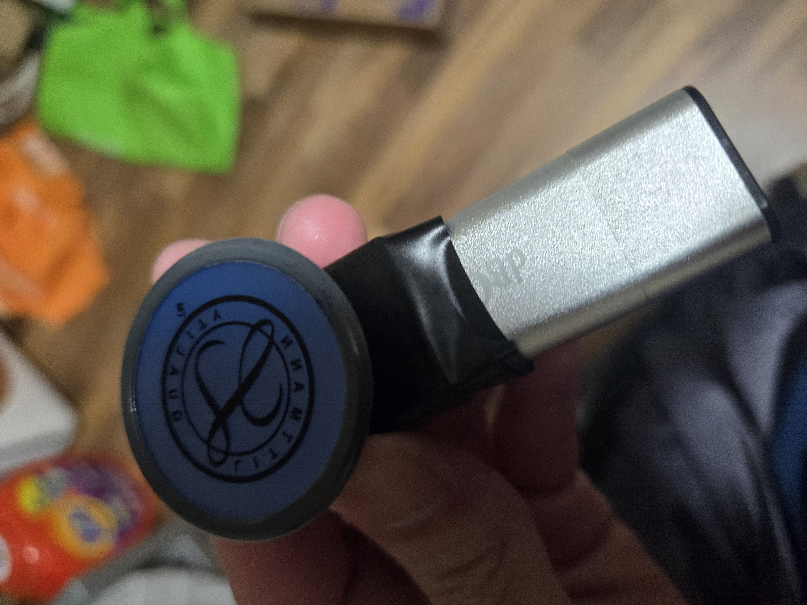
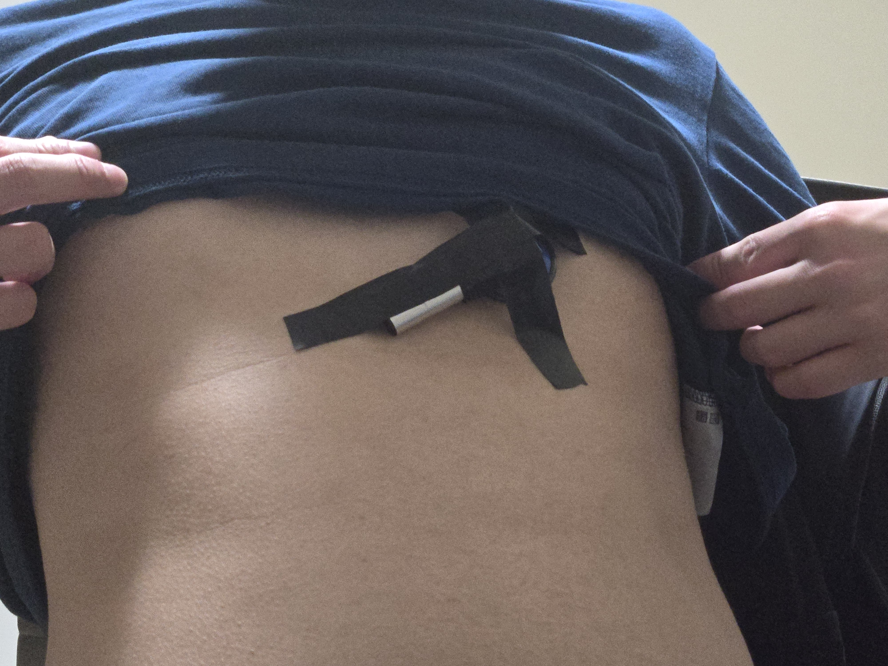

09/05/24 Weekly Report#
Progress#
Recording#
I’ve recorded 2 trial run when I was sleeping. Here are the images showing how the recording was taken.
 
Recording detail can be found on the data folder on github
Dataset#
Below are some datasets I found online that uses microphone or stethoscope as a recording device. Some of them are annotated and verified by expert, and even used in research paper.
Dataset List
Machine Learning Algorithm#
There is a need to preprocess our audio and then feed it into a classification model. For preprocessing, I am looking into librosa and TensorFlow or PyTorch can be used for machine learning model.
Problem and Improvement#
There are some thing I noticed when recording. The first data doesn’t pick up any heartbeat sound at all, it was because I used a weak tape. I also want to implement live hearing. Because currently, I need to turn off the recording to get a sample sound, which means shifting position of the stethoscope and I don’t know if this current position can detect heartbeat or not.
Challenge#
Dataset Validation#
A lot of datasets are taken from the internet, not from physician or clinic. A lot of clinic doesn’t want to upload stethoscope recording because of privacy reasons. Hence, there will be a lot of bad data and we will need time filter out for good data.
Heartbeat detection#
For both test, heartbeat wasn’t detected. It was probably due to the placement of the stethoscope. I will try to adjust the position.
Confusion about ML Output#
A lot of research paper used ML to identify heart sound and some possible diseases. However, what do we want from our stethoscope? Is it beats per minute, healthy or abnormal sound, sleap apnea sound, etc. In short, I don’t know what we want our model to notify us with.
Goals for Next Week#
Implement audio classification#
I want to implement audio classification, at least make it able to detect lung sound.
Apply recognition to something useful#
If we can detect certain breathing pattern for example, I want to use ML to detect if that is a healthy or unhealthy breathing pattern.
Detect heartbeat#
Get a recording with heartbeat detected.
Learn preprocessing model#
I just did a surface level search of preprocessed model, and I want to know what is the state of the art of audio preprocessing.
Plan out next prototype#
Decide on the use of microphone module and the component needed for it to work.